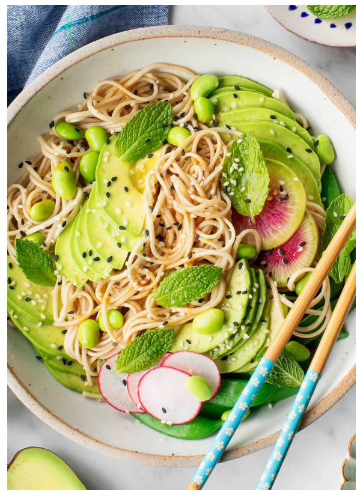

Seasame Soba Noodles Recipe

Recipe Description
Happy Monday! If you’re like me and you had a weekend full french toast, cake, and pancakes,
then you’ve come to the right place! Today I have a fresh, delicious bowl of soba noodles to
help start the week off in a healthy direction. The best thing about this bowl is that it’s
super simple to make, yet has great zippy flavor. There’s a light sesame-ginger dressing that
perfectly coats the soba noodles. On top of that, I chose to mix in a group of vibrant spring
veggies, but keep reading for a few other suggestions to customize your noodle bowl!
Ingredients
Sesame Dressing
- ¼ cup rice vinegar
- 2 tablespoons tamari, more for serving
- ½ teaspoon toasted sesame oil
- 1 teaspoon grated ginger
- 1 garlic clove, grated
- ½ teaspoon maple syrup or honey
For the Soba Noodles
- 6 ounces soba noodles*, see note
- Sesame oil, for drizzling
- 2 avocados, sliced
- Squeezes of lemon
- 2 cups blanched snap peas
- ¼ cup edamame
- 1 watermelon radish or 2 red radishes, very thinly sliced
- 1/4 cup fresh mint leaves
- Sesame seed
Instructions
- Make the dressing: In a small bowl, combine the vinegar, tamari,
sesame oil, ginger, garlic, and honey. Set aside.
- Bring an unsalted pot of water to a boil and cook
the soba noodles according to package directions. Drain
and rinse well in cold water. This helps to remove
starches that cause clumping. Toss the noodles with the
dressing and divide into 2 to 4 bowls. Squeeze fresh
lemon juice onto the avocado slices and add to the bowls
along with the snap peas, edamame, radish, mint, and
sprinkle with sesame seeds. Drizzle with more tamari or
sesame oil, if desired.